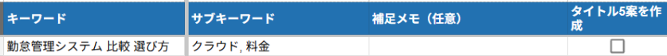
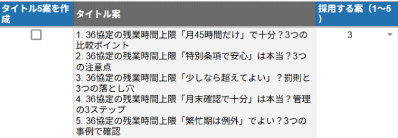
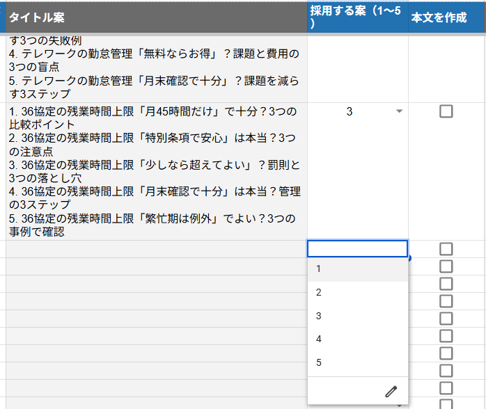
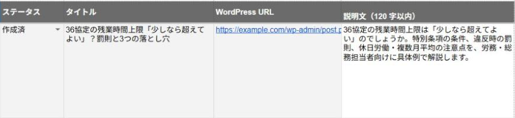
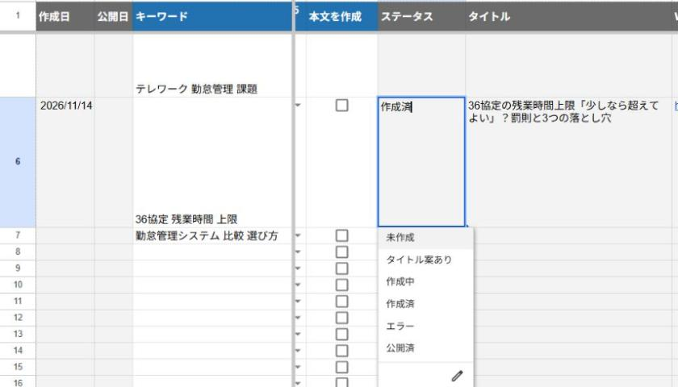
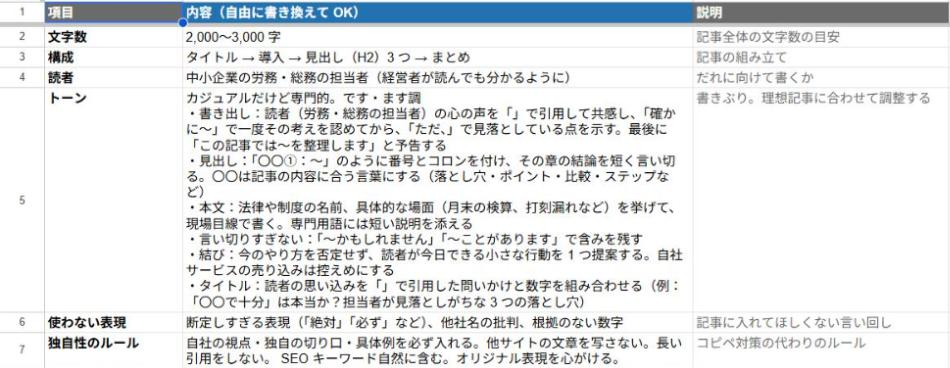
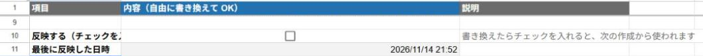

1 本の記事ができるまで（目安 5 分 ＋ 確認・手直し）
- キーワードを入れる
- 「タイトル5案を作成」にチェック 約 30 秒
- 使うタイトルの番号を選ぶ
- 「本文を作成」にチェック 1〜2 分
- WordPress で下書きを確認し、画像を設定して公開する
- ステータスを「公開済」にする
列の見出しの色
青 担当者の方が入力・操作する列 灰色 自動で書き込まれる列（手で書き換えないでください）
1記事を作る
「記事作成」シートを使います。1 つの行が 1 本の記事です。
STEP 1キーワードを入れる
空いている行の 「キーワード」 に、検索してほしい言葉を入れます。必要なら 「サブキーワード」（一緒に入れたい言葉）と 「補足メモ」（入れてほしい自社の話、読者の悩みなど）も入れます。

STEP 2「タイトル5案を作成」にチェックを入れる
30 秒ほどで、「タイトル案」 に 5 つの案が入ります。チェックは自動で外れます。

STEP 3使うタイトルの番号を選ぶ
「採用する案（1〜5）」 のセルの ▼ を押し、使う案の番号を選びます。

STEP 4「本文を作成」にチェックを入れる
AI が記事を書き、WordPress に 下書き として保存します。1〜2 分かかります。 その間ステータスは「作成中」のままですが、止まっていません。
終わると、ステータスが 「作成済」 になり、タイトル・WordPress URL（下書きの編集画面）・作成日・説明文 が入ります。

STEP 5WordPress で下書きを確認して公開する
「WordPress URL」を押すと、WordPress の編集画面が開きます（ログインが必要です）。AI の下書きは 手直しして仕上げるためのスタートライン です。次の点を確認してください。
| 確認すること | 理由 |
|---|---|
| 法律・制度・数字が正しいか | AI は間違えることがあります。特に労務の法律は、改正で変わることもあります |
| 自社のサービス・事例・お客様の声を足す | 御社ならではの内容は AI には書けません。記事の独自性が上がります |
| 他のサイトの文章と似すぎていないか | 気になる表現は、類似チェックツールで確かめてください |
| アイキャッチ画像を設定する | 画像は自動では入りません |
| 説明文を設定する | SEO 用のプラグインを使っている場合は、シートの「説明文」をコピーして、プラグインの説明文の欄に貼ります |
確認が終わったら、WordPress で 公開 を押します。
STEP 6ステータスを「公開済」にする
「ステータス」のセルの ▼ を押し、「公開済」 を選びます。「公開日」 に今日の日付が自動で入ります。

2書き方を変えたいとき
文字数・読者・トーン・使わない表現・お手本の記事は、「共通設定」 シートで変えられます。AI への指示文そのものは 「個別設定」 シートにあります。
1「内容」の列を書き換える
セルを ダブルクリック してから書き換えます（複数行の文章を貼り付けるときも、ダブルクリックしてから貼ります。そうしないと、行が分かれてしまいます）。

2「反映する」にチェックを入れる
表の下にある 「反映する」 にチェックを入れると、「最後に反映した日時」 が更新され、次に作る記事から新しい内容が使われます。チェックを入れるまでは、前の内容のまま作られるので、書きかけの状態で記事が作られることはありません。

3知っておくと便利なこと
| こんなとき | やり方 |
|---|---|
| 作成済の記事をもう一度作りたい | 同じ記事が 2 本できないよう、「作成済」「公開済」の行は作り直しません。作り直すときは、WordPress の前の下書きを削除してから、ステータスを「タイトル案あり」に戻して「本文を作成」にチェックを入れます |
| 何本かまとめて作りたい | 続けてチェックを入れてかまいません。1 本ずつ順番に作られます |
| 費用 | 記事 1 本あたり約 7 円です（タイトル案の作成は 1 回 0.1 円未満） |
| キーワードを選ぶとき | すでにある記事とテーマが重なると、似た内容になりやすく、検索で自社の記事どうしが競合します。既存記事と重ならないキーワードを選んでください |